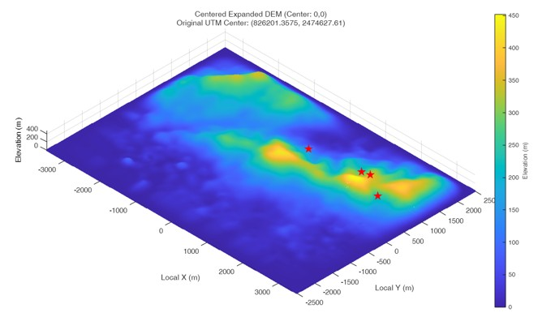
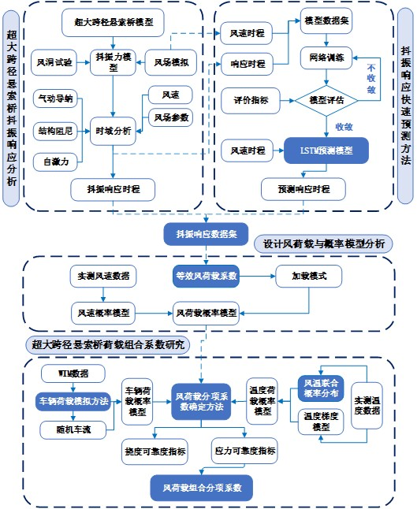
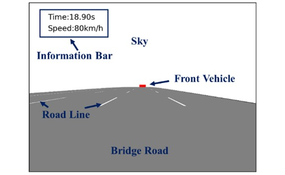
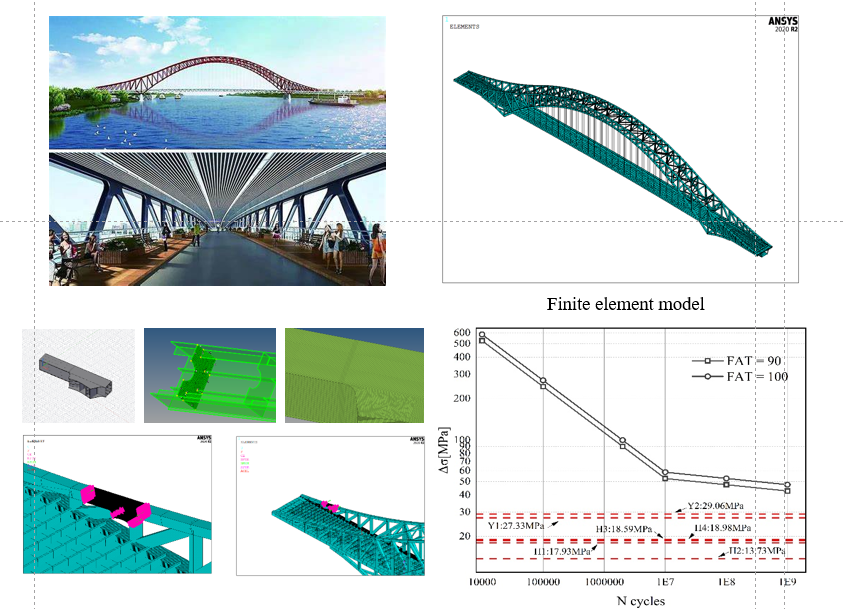
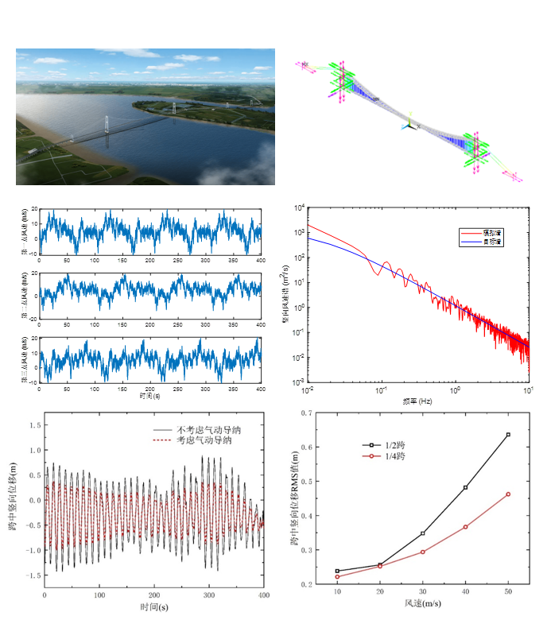
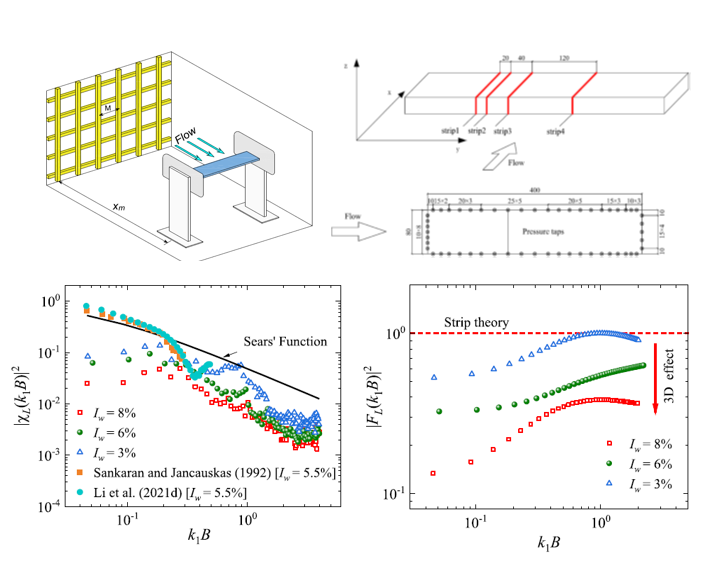
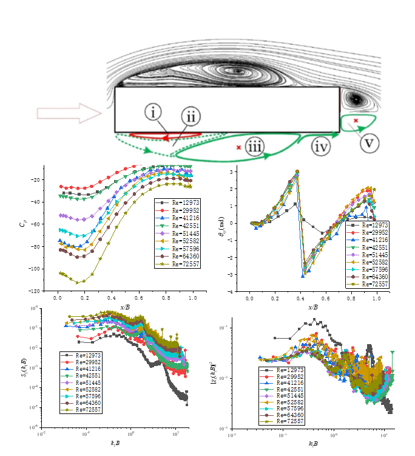

Research Projects

Wind-induced Risk Assessment of ETTLS under different Terrain, 2026
#Wind Field #ETTLS #Topology
This study use high-resolution CFD to reveal how complex topographies trigger significant wind speed-up effects and turbulence evolution across power system infrastructures. By coupling structural mechanics with terrain-specific wind loads, the framework quantifies the dynamic response and vulnerability of transmission towers and lines, identifying critical risk nodes under extreme wind conditions.

Study on Design Wind Load Model and Load Combination Coefficients for Long-span Suspension Bridges, 2025
#Long-span Suspension Bridge #Load Coefficients #Buffeting Response Prediction
A buffeting response time series prediction method based on LSTM was explored. Design wind load and probabilistic model analysis for super-long-span suspension bridges were carried out based on buffeting response datasets. Load combination coefficients for long-span suspension bridges were studied using data from adjacent bridges.

Evaluation of Visual Comfort on Long-span Suspension Bridges Experiencing Vortex-induced Vibration, 2024
#Visual Comfort #Vortex-induced Vibration #Long-span Suspension Bridge
Integrated Evaluation Framework: The study establishes a systematic process to generate simulated driving videos under Vortex-Induced Vibration (VIV).
Subjective-Objective Methodology: The study created realistic visual simulations used in questionnaire-based reliability analyses to quantify subjective driving comfort.
VIV Mode Sensitivity:The study demonstrates that driving comfort is significantly impacted by higher-order vertical vibration modes and VIV amplitudes.
Proposed Safety Limits: The study concludes that current bridge codes may be too lenient in low-frequency ranges, VIV amplitudes should be strictly controlled between 0.2m and 0.3m.

Research on Fatigue Performance of Zhuzhou Qingshuitang Bridge, 2023
#Multi-scale Model #S-N Fatigue Curves #Steel Fatigue
The project identifies critical fatigue nodes by dynamic stress amplitude analysis. A sophisticated full-bridge multi-scale model was developed using HYPERMESH and ANSYS. By applying the rain-flow counting method under Chinese and European codes, the study determined that maximum stress at weld positions remains below 20MPa. Ultimately, the results confirm that the weld fatigue life exceeds the 100-year design requirement, as the stress levels do not intersect the S-N fatigue limit curves.

Buffeting Response of Super-long Span Suspension Bridges, 2022
#Super-long Span Suspension Bridge #Time domain Analysis #Buffeting Response
A finite element model was established based on a 2300-meter-long suspension bridge, and nonlinear static analysis and prestressed modal analysis were conducted to verify the practicality of the model. Meanwhile, an improved harmonic synthesis method was adopted to simulate the 3D buffeting wind field near the bridge. This project was awarded as an outstanding graduation thesis of Chongqing University in 2022.

Effect of Turbulence Intensity on Unsteady Gust-loading, 2021
#Wind Tunnel Test # Aerodynamic Admittance Function #Turbulence Intensity
This study investigated the influence of turbulence intensity on the unsteady aerodynamic behavior of a 5:1 rectangular cylinder through wind tunnel experiments. It was found that turbulence intensity plays a dominant role in determining the lift 3D one-dimensional aerodynamic admittance (AAF), and an increase in turbulence intensity weakens the value of this admittance. The results have been published inJWEIA.

Reynolds Number Effects on 3D Aerodynamic Admittance Function, 2020
#Reynolds Number #Wind Characteristics #Flow Topology
The influence of Reynolds number on the surface wind pressure characteristics of a 5:1 rectangular column was studied. By analyzing the experimental data, the relationship between the average suction peak and the vortex center, as well as the root mean square value of the fluctuating wind pressure and the reattachment point was revealed, providing a possibility for estimating the time-averaged flow topology through pressure characteristics.